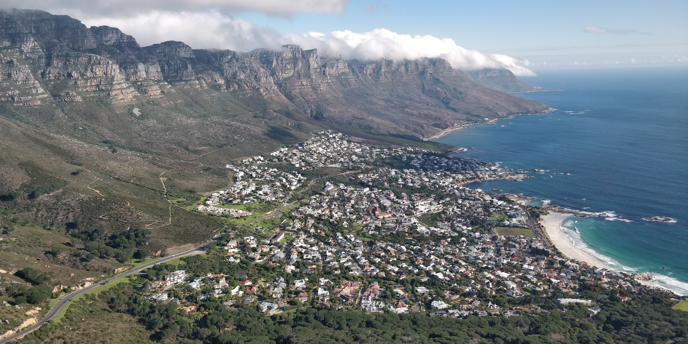
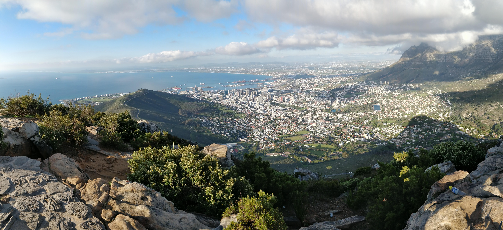

De Signal Hill à Lion's Head
randonnée

Lion's Head à gauche et Twelve Apostles à droite
Lion's Head : pic rocheux surplombant la ville du Cap.
Il est possible d’arriver au pied du rocher de Lion’s head par plusieurs chemins. Soit en empruntant un chemin en haut d’un quartier très aisé du côté de Bantry Bay soit un autre que nous avons pris, en haut d’une rue proche de green point. Il est aussi possible d’atteindre le bas du rocher en voiture en empruntant Kloof road. En prenant le chemin sillonnant la colline de Signal Hill on aperçoit très vite l’ensemble du quartier de Seapoint ainsi que l’océan qui s’efface à l’horizon. Le chemin n’est pas très compliqué, nous vous recommandons donc d’observer le paysage pendant que vous marchez. Cela ne sera bientôt plus possible…

Signal Hill
Tout au long de cette marche, vous pourrez voir énormément de points de vue différents. D’ailleurs en continuant sur ce chemin vous prendrez vite de la hauteur, ce qui vous découvrira l’ensemble de Clifton où l’on trouve certaines des meilleures plages de la ville. Un belvédère naturel vous permet d’observer la baie surplombée de la chaine de montagnes : « Twelve Apostles ». Les nuages stagnant au niveau de cette chaîne de montagnes nous offrent un spectacle exceptionnel.
Vue sur Clifton depuis Lion's Head
En continuant sur le sentier, on s’aperçoit que celui-ci fait le tour du rocher en prenant de l’altitude. Très vite, nous nous retrouvons de nouveau face à signal Hill, mais en ayant pris plus de hauteur. C’est à ce moment qu’on se rend compte que Lion’s head domine la ville du Cap. Nous profitons de cette vue pour faire une pause, car le plus dur reste à venir.
Vue sur le Cap
Arrivés en bas du rocher, un seul chemin s’offre à nous, gravir la tête du lion par la crinière. C’est la partie de la randonnée la plus complexe, en effet il faut savoir que nous sommes à 650m au-dessus du sol et que le chemin est à flanc de falaise. La montée est tellement abrupte qu’à certains moments nous sommes obligés d’utiliser des prises d’escalades mises à disposition.

Dernière partie de la randonnée, la crinière du lion
Enfin ! Le sommet de Lion’s Head est à nous ! La fin de la montée n’a pas été facile, loin de là. Entre le soleil brulant, le vide sous nos pieds et la fatigue s’accumulant, nous avons dû puiser dans nos dernières ressources pour venir à bout de cette épreuve. Tous ces efforts furent récompensés lorsqu’un panorama à 360° s’offrit à nous. D’un côté, une vue imprenable sur l’Océan, de l’autre, la ville du Cap et ses environs au pied du domaine de Table Mountain.

Le sommet de Lion's Head, et Table Mountain en arrière plan
- Date: 24 Aout 2018